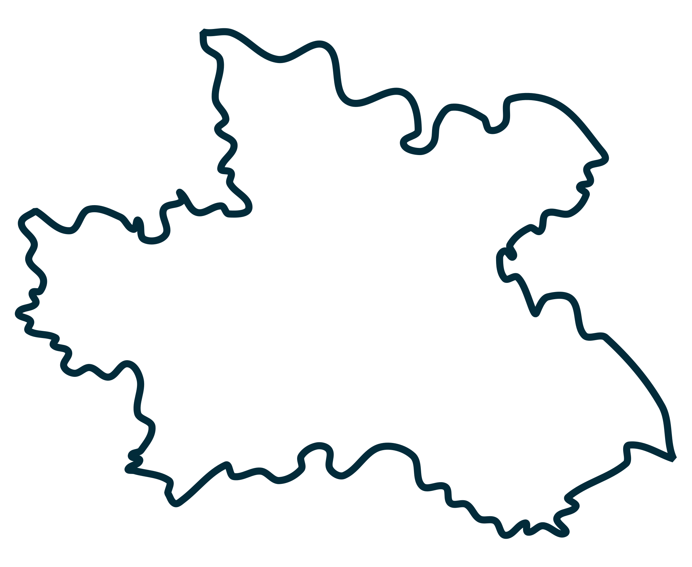

Analyzujeme okolní infrastrukturu, dopravu, zdravotnictví a další kritéria. Na základě otevřených dat vám pomůžeme zjistit kvalitu vašeho budoucího bydlení.
Zdarma · Bez registrace · Otevřená data
Každou lokaci posuzujeme v několika klíčových kategoriích, které ovlivňují kvalitu každodenního života.
Autobusové zastávky, vlakové stanice, dopravní spojení a dostupnost veřejné dopravy.
Nemocnice, praktické lékaře, dětské ambulance a další zdravotnická zařízení.
Základní školy, umělecké školy a další vzdělávací instituce v okolí.
Průmyslové zóny, pracovní příležitosti a ekonomická aktivita v dané oblasti.
Záplavové zóny, rizikové oblasti a bezpečnostní faktory dané lokality.
Hluková zátěž a faktory ovlivňující celkový komfort života v daném místě.
Tři jednoduché kroky k úplnému přehledu o vaší vysněné lokalitě.
Klikněte na mapu a označte místo, které vás zajímá. Může to být adresa nemovitosti, kterou zvažujete, nebo vaše současné bydliště.
Náš systém zpracuje desítky datových sad z otevřených dat a pomocí AI vyhodnotí kvalitu okolí ve všech kategoriích.
Obdržíte podrobné hodnocení s vizualizací na mapě a skóre pro každou kategorii. Všechno přehledně na jednom místě.
Výsledky přizpůsobujeme vaší životní situaci. Každý profil zdůrazňuje jiné kategorie.
Důraz na dostupnost škol, veřejnou dopravu a cenovou přístupnost okolí.
Prioritou je bezpečnost, blízkost dětských lékařů, škol a klidné prostředí.
Klíčová je dojížděcí vzdálenost, dopravní infrastruktura a pracovní příležitosti.
Aktuálně pokrýváme celý Královehradecký kraj. Data průběžně aktualizujeme.
